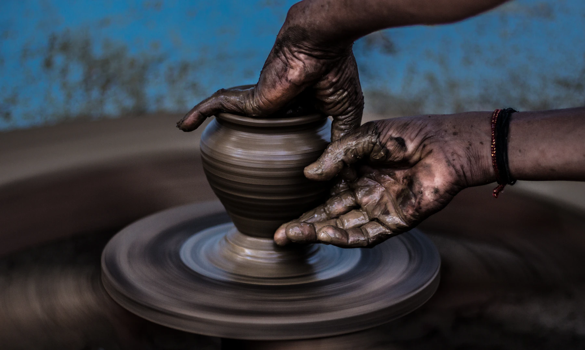

MATERIAL STUDY / 02
材料，记得我们如何使用它。
表面留下的痕迹，不全是损耗。从陶器的手感开始，讨论照料如何进入日常设计。
展开导读
陶土在手中变得平整，使用又会慢慢留下新的纹理。我们借这一场景讨论材料的生命：可辨认的结构、可以更换的部件，以及一份愿意解释保养边界的说明，如何让物件与使用者相处得更久。本文是原创议题导读，不提供具体器物修复教学。
THE REPAIR ISSUE / 01
当我们愿意理解一个物件，
修理就不仅是恢复功能。


MATERIAL STUDY / 02
表面留下的痕迹，不全是损耗。从陶器的手感开始，讨论照料如何进入日常设计。
陶土在手中变得平整，使用又会慢慢留下新的纹理。我们借这一场景讨论材料的生命：可辨认的结构、可以更换的部件，以及一份愿意解释保养边界的说明，如何让物件与使用者相处得更久。本文是原创议题导读，不提供具体器物修复教学。
EVERYDAY SYSTEMS / 03
从一张借用卡，到一个可停留的街角。那些不起眼的连接，也能成为生活的基础设施。
一套系统的价值，不只取决于它能处理多少请求，也在于人是否知道从哪里开始。把借用、归还与维护写得更明白，可能比再增加一个入口更有用。我们借虚构街区讨论信息可达性；所配城市影像只作主题参考，不代表对画面地点的真实采访。
REPAIR CULTURE / EDITOR'S NOTE
修理是技能，也是一种愿意解释的关系。工具之外，人们还需要清楚的参与方式和边界。
一张桌子可以先接住一个问题，而不是急着给出答案。谁可以借用工具，哪些器材需要专业人员，下一位接手的人如何找到维护记录？这些琐碎的安排，才是共享修理空间日常运转的开始。它不是某个真实项目的调研结论，而是本刊虚构编辑部的议题札记。
3 篇专题导读
FROM THE EDITOR
参数之外，我们关心的是人如何使用、理解和照料身边的物件。Matter 是一份原创虚构刊物：一篇完整长文，三份独立议题导读，没有真实订阅或商业服务。
THE REPAIR ISSUE / LONG READ
钢笔与手写笔记 / 许可主题参考，非本文虚构修理铺实拍。
修理铺的门很窄。推门进去，先看到的不是陈列架，而是一张被使用了很久的工作台。台面有浅浅的刻痕，工具各有自己的位置。这个虚构的街角场景，提醒我们重新想一件熟悉的事：当一个物件不再正常工作，我们会先想到替换，还是理解它？
我们常把产品看成一个完整、封闭的答案。包装、参数和广告告诉我们它能做什么，却很少解释它如何组成。修理让这种关系发生变化：一个旋钮连接到哪里，一颗螺丝承担什么，一段线如何让信号通过，原本被隐藏的结构开始成为可阅读的知识。
这种理解并不意味着每个人都应该自行拆开电器。涉及电源、压力或其他安全风险的操作，仍然需要具体说明与专业人员。真正值得学习的，是先提出问题、辨认边界，而不是把“亲自动手”本身当作目标。
一件东西是否容易修，往往在它坏掉以前，就已经被决定。
当接口可以被辨认，易损部件可以单独更换，说明书用清楚的语言解释限制，维护就不再是售出之后的偶然补救。它成为产品的一部分，也成为制造者与使用者之间更长久的关系。
设计师也许可以从一个很小的问题开始：下一位接手这个物件的人，能否知道从哪里打开？不需要用胶粘住的地方，是否还有更可逆的连接？这些选择不如首屏图片引人注目，却可能决定物件下一段生活。
工具是最直观的答案，但工具之外还有空间、经验和愿意解释的时间。一间修理角如果只摆满器材，却没有清楚的使用边界，它未必更容易被参与。反过来，一张简明的借用卡、一次缓慢的示范，也可能让陌生人找到参与的方式。
这篇文章没有给出真实调查数据，也不代表某个产品的可修复性评级。它是一篇原创虚构长文，用来探索技术报道如何从参数回到日常生活。我们希望留下的不是一句结论，而是一种更愿意理解物件的耐心。
— 许禾，Matter 原创演示编辑部 / 2026年11月19日